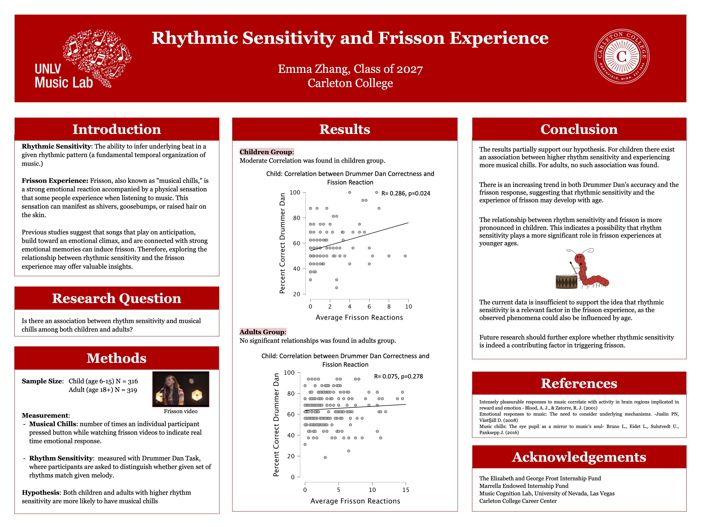
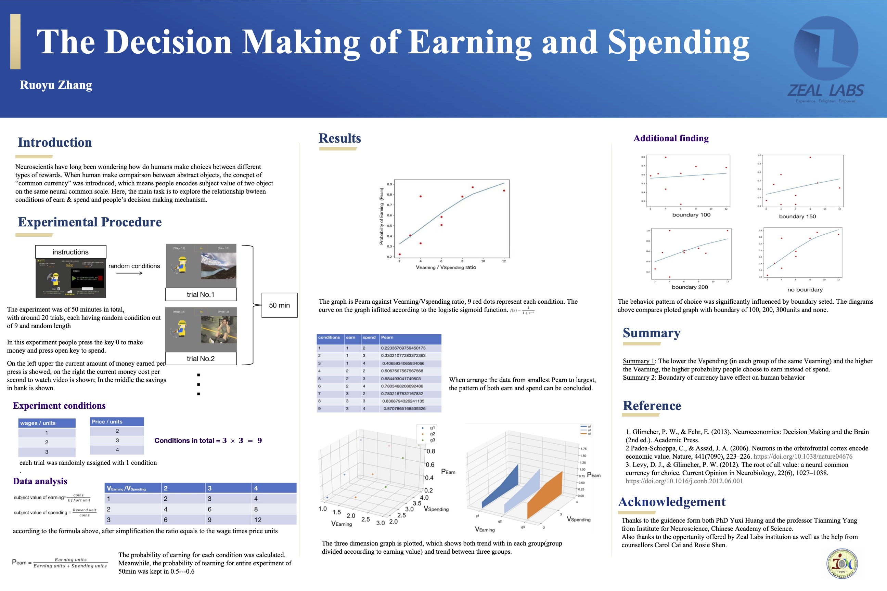

Cognitive Science Research
I've been working primarily in Cognitive Science Research Labs. So far, I've worked as Research Assistant in 2 relevant labs.
- Music Cognition Lab
- Lab of Neural Mechanisms of Decision-Making and Cognition
Summer 2024, Las Vegas, NV
The Lab studies the development of human musicality. Specifically how musicality influence and is influenced by cultural specific listening experience, laguage and emotions.
Summer 2022, Shanghai, China
The Lab aims to study neural mechanisms behind decision making process. The lab focus on human participants as well as Macaque monkeys that were trained to performe various decision making tasks.
